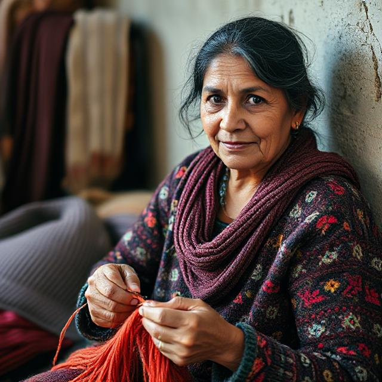
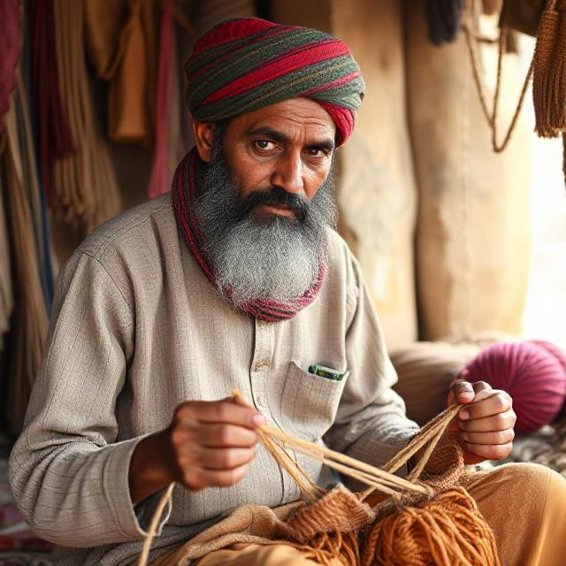

Ramakrishnan
Potter Of Kumbakonam
Ramakrishnan is a potter from Kumbakonam, Tamil Nadu, crafting traditional clay pots inspired by temple art. Taught by his grandfather, he shapes each piece by hand using river clay and wood-fired kilns. His work honors the earth — and a legacy he hopes to pass on.


Devi
Knitter Of Himalayan Hills
Devi is a self-taught knitter from Himachal Pradesh, known for her colorful woolen shawls and mittens. Inspired by mountain patterns and village life, she weaves warmth and tradition into every stitch — one thread at a time.


Hazam
Weaver of Banarasi Dream
Hazam is a master weaver from Varanasi, crafting Banarasi silk with shimmering zari threads. Each piece he weaves carries the legacy of his forefathers and the spirit of devotion.